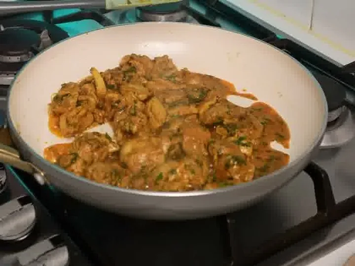

Lime & Herb Masala Chicken
77g protein570 cal
Per serving (the full recipe serves 2).

Ingredients
- 800g chicken thigh (1 cm cubes)
- 1 tbsp salt, 1 tbsp red chilli powder, 1.5 tbsp coriander powder, 1 tbsp garam masala, 1 tsp turmeric
- 4 tbsp curd, 1 tbsp ghee, 1 tbsp ginger-garlic paste
- 1 lemon, fresh coriander + mint
Steps
- Mix all the spices, curd, ghee and lemon into the chicken.
- Cook in a pan on medium heat, 4 min on one side; flip, 4 min on the other side.
- If it releases water, stir and dry it for 4 more min, until the masala coats the chicken.
- Top with coriander and mint. Ready!